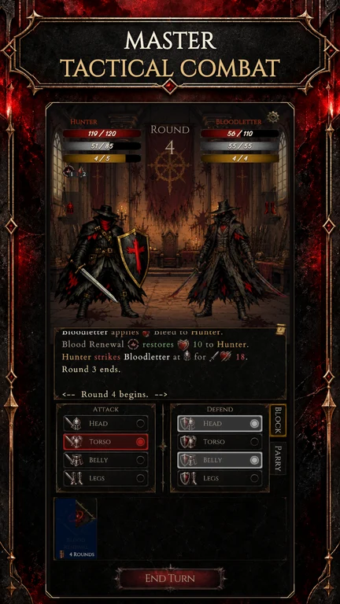
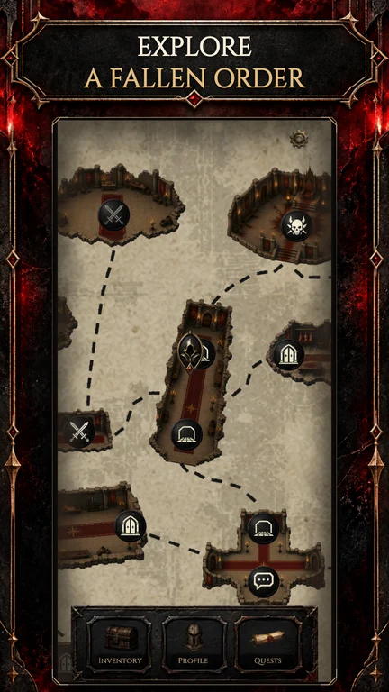
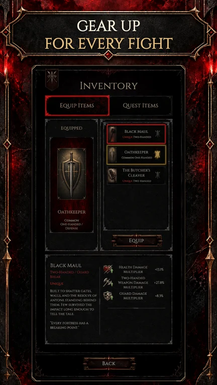
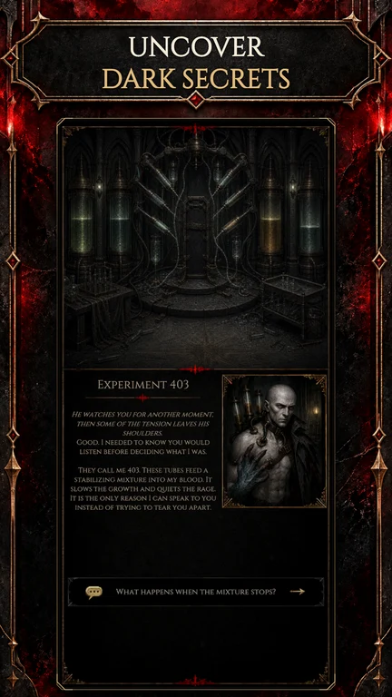
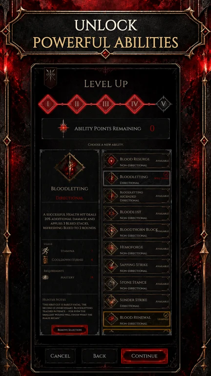
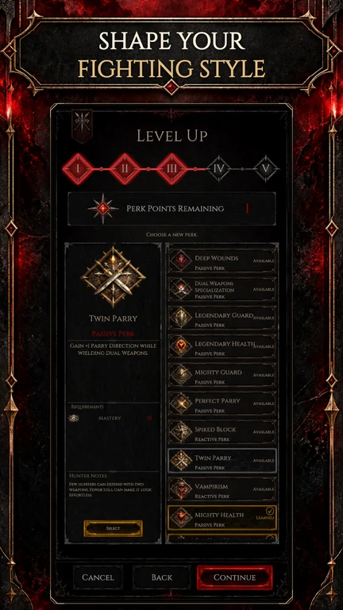

Читати супротивникаRead your opponent
Обирай напрямки атаки й захисту. Вирішуй, коли блокувати, коли парирувати та на що витратити сили.Choose attack and defense directions. Decide when to block, when to parry, and where to spend your resources.
MAD HYDRA PRODUCTION
Світ пам’ятає
твої звички.The world remembers
your habits.
Похмура однокористувацька RPG з тактичними покроковими дуелями. Досліджуй десять поверхів занепалого ордену мисливців і розвивай власний стиль бою.A dark single-player RPG with tactical turn-based duels. Explore ten floors of a fallen hunters’ order and develop your own fighting style.
Офлайн · Одна покупка · Без реклами й внутрішньоігрових покупокOffline · One-time purchase · No ads or in-app purchases
ПРО ГРУTHE GAME
Обирай напрямки атаки й захисту. Вирішуй, коли блокувати, коли парирувати та на що витратити сили.Choose attack and defense directions. Decide when to block, when to parry, and where to spend your resources.
Повторювані дії дають ворогу досвід. Власні рішення доводиться переглядати, а його поведінку — спостерігати.Repeated actions give the opponent experience. Watch its behavior and reconsider the choices that have become predictable.
Поєднуй зброю, атрибути, перки та здібності. Розвивай героя навколо тактики, яка цікава саме тобі.Combine weapons, attributes, perks, and abilities. Build a character around the tactics you enjoy.
БЕЗ СЮЖЕТНИХ СПОЙЛЕРІВA LOOK INSIDE
Натисни, щоб роздивитисяSelect an image to take a closer look






ПУБЛІЧНА WIKIPUBLIC GAME GUIDE
Знайомство з дуелями, ресурсами, розвитком героя та світом Carnage Club.Explore the duels, resources, character progression, and world of Carnage Club.
АВТОРСЬКА РОЗРОБКАGAME DEVELOPMENT
Carnage Club починався як експеримент з ігровим AI. З нього виросла моя перша власна гра. Я придумав її світ і правила, розробив бойову систему й кампанію та самостійно випустив гру під назвою Mad Hydra Production.Carnage Club began as an experiment with game AI. It grew into my first independent game. I created its world and rules, built the combat system and campaign, and released it myself under Mad Hydra Production.
Новини розробки та історія створення гриDevelopment updates and the story behind the game
Стежити в LinkedInFollow on LinkedIn